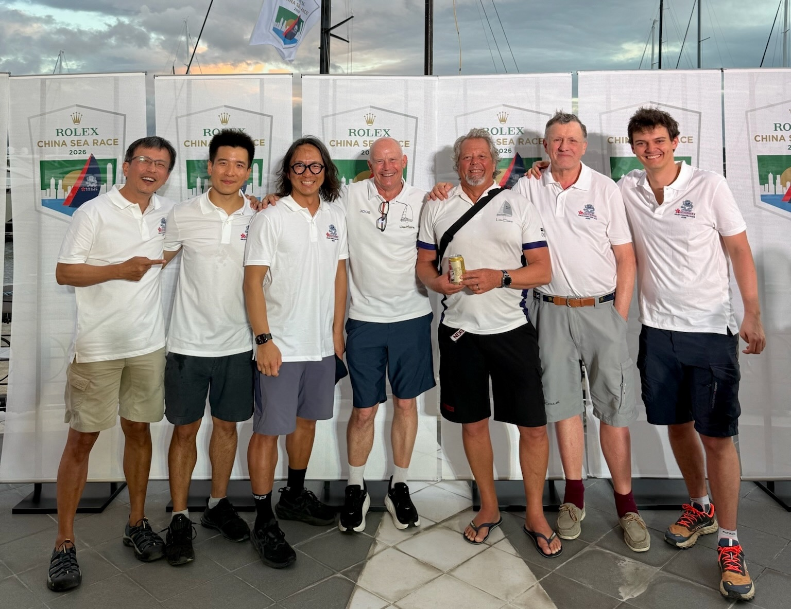

Lisa Elaine
Rolex China Sea Race 2026
IRC Premier
Time (HKT)
--:--:--
Date
----/--/--
Speed
--
kn
-- ~ --
Avg Speed
--
kn
Race Dist
--
nm
Race Time
--:--:--
▶
1x
5x
10x
50x
100x
500x
Download GPX
CREW

Lisa Elaine
ROLEX CHINA SEA RACE 2026
Ben Lam
Jonny Wong
Hojun Song
Carl James Wilkinson
(Owner)
Mark John Sellier
Peer Viby Nielsen
Remy Kerzreho
×